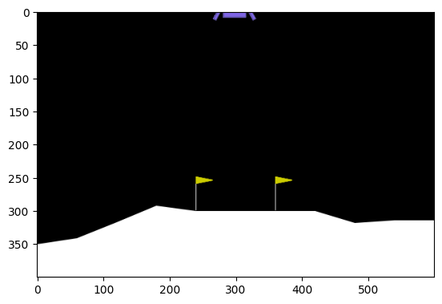
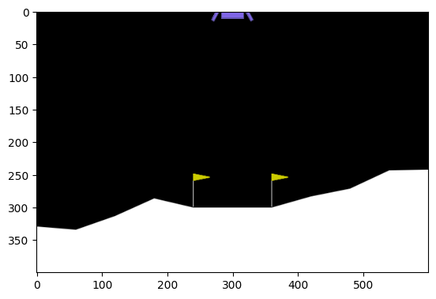
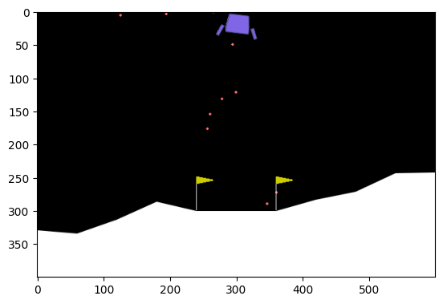

import gymnasium as gym
import numpy as np
import matplotlib.pyplot as plt
from matplotlib.animation import FuncAnimation
import torch
import collections
import IPython최규빈
2023-09-01
강의영상
https://youtu.be/playlist?list=PLQqh36zP38-zBEizLbjgRE8qMfsJML6Ua&si=HALKE6fjiWB12AGW
imports
예비학습
- collections.deque 의 기능
a = collections.deque([1,2,3], maxlen = 5 )
aa.append(4)
aa.append(5)
aa.append(6)
a- 단점? numpy array 보다는 list 느낌임 (연산에 특화된건 아님)
a + 1- 그렇지만 필요하다면 np.array 화 시킬 수 있음.
np.array(a) + 1- collection.deque 는 리플레이 버퍼를 구현할때 유용한 자료구조이다.
- (우리가 했던) 기존방식: 모든 데이터를 저장하며 하나의 경험씩 학습함
- 리플레이버퍼: 최근 \(N\)개의 데이터를 저장하여 여러경험을 샘플링하여 학습하는 방식
- 리플레이버퍼의 장점: 메모리를 아낄 수 있다, 다양한 종류의 경험을 저장하고 무작위로 재사용하여 학습이 안정적으로 된다, “저장 -> 학습 -> 저장” 순으로 반드시 실시간으로 학습할 필요가 없어서 병렬처리에 용이하다, 강화학습에서 연속된 경험은 상관관계가 있을 수 있는데 무작위 샘플로 이러한 상관관계를 제거할 수 있음
Game3: LunarLander
- 환경생성
env = gym.make('LunarLander-v2', render_mode = 'rgb_array')
env - state_space
env.observation_space- action_space
env.action_space- env.reset()
state, _ = env.reset()
state - env.render()
plt.imshow(env.render())
- env.step
next_state, reward, terminated, _, _ = env.step(0)
next_state, reward, terminated- play
env.reset()
plt.imshow(env.render())
for _ in range(7):
env.step(3)
env.step(2)
plt.imshow(env.render())
- 0 : 아무행동도 하지 않음
- 1 : 왼쪽
- 2 : 위
- 3 : 오른쪽
시각화
def show(ims,jump=10):
ims = ims[::jump]
fig = plt.Figure()
ax = fig.subplots()
def update(i):
ax.imshow(ims[i])
ani = FuncAnimation(fig,update,frames=len(ims))
display(IPython.display.HTML(ani.to_jshtml()))current_state, _ = env.reset()
ims = []
for t in range(500):
action = env.action_space.sample()
next_state, reward, terminated, _, _ = env.step(action)
im = env.render()
ims.append(im)
current_state = next_state
if terminated: break show(ims) q_net
- 원래는 agent.q 에 해당하는 것인데, 이전에서는 agent.q를 (4,4,4) shape의 numpy array 를 사용했는데 여기서는 불가능
- 4x4 grid: 상태공간의 차원은 2차원이며 가질수 있는 값은 16개, 각 상태공간에서 할수 있는 행동이 4개 -> 총 16*4의 경우의 수에 대한 reward만 조사하면 되었음
- LunarLander: 상태공간의 차원은 8차원이지만 가질수 있는 값의 범위는 무한대 -> 무수히 많은 경우에 대한 reward 값을 조사하는건 현실적으로 불가능
- 데이터를 모아보자.
current_states = collections.deque(maxlen=50)
actions = collections.deque(maxlen=50)
next_states = collections.deque(maxlen=50)
rewards = collections.deque(maxlen=50)
terminations = collections.deque(maxlen=50)
current_state, _ = env.reset()
for t in range(500):
## step1: agent >> env
action = env.action_space.sample()
## step2:agent << env
next_state, reward, terminated, _, _ = env.step(action)
current_states.append(current_state)
actions.append(action)
next_states.append(next_state)
rewards.append(reward)
terminations.append(terminated)
## step3: learn
## step4: update state
current_state = next_state
## step5: 종료조건체크
if terminated: break - 이전코드에서 아래에 대응하는 부분을 구현하면 된다.
## 1. q[x,y,a]를 초기화: q(s)를 넣으면 action에 대한 q값을 알려주는 기능
agent.q = np.zeros([4,4,4])
## 2. q_estimated 를 계산
x,y = agent.current_state
xx,yy = agent.next_state
a = agent.action
q_estimated = agent.q[x,y,a]
## 3. q_realistic = agent.reward + 0.99 * q_future 를 수행하는 과정
if agent.terminated:
q_realistic = agent.reward
else:
q_future = q[xx,yy,:].max()
q_realistic = agent.reward + 0.99 * q_future
## 4. q_estimated 를 점점 q_realistic 와 비슷하게 만드는 과정
diff = q_realistic - q_estimated
agent.q[x,y,a] = q_estimated + 0.05 * diff 1. agent.q 에 대응하는 과정
q_net = torch.nn.Sequential(
torch.nn.Linear(8,128),
torch.nn.ReLU(),
torch.nn.Linear(128,64),
torch.nn.ReLU(),
torch.nn.Linear(64,32),
torch.nn.ReLU(),
torch.nn.Linear(32,4)
)q_net # <- 8개의 숫자가 입력으로 오면 4개의 숫자를 리턴하는 함수 q_net(torch.tensor(current_state))- q_net은 8개의 숫자가 입력으로 오면 4개의 숫자가 리턴되는 함수이다.
- 해석을 하면 8개의 숫자는 state를 나타내는 숫자로 이해할 수 있고 4개의 숫자는 각 action에 대한 q값으로 해석할 수 있다.
- 하지만 이 숫자가 합리적인건 아님 (아무숫자임)
- q_net의 특징: 고정된 함수가 아니고 데이터를 이용하여 점점 더 그럴듯한 숫자를 뱉어내도록 학습할 수 있는 함수이다. (뉴럴네트워크)
1. agent.q 에 대응하는 과정 (배치버전)
– get batch –
batch_size = 4
idx = np.random.randint(0,50,size=batch_size)
current_states_batch = torch.tensor(np.array(current_states))[idx].float()
actions_batch = torch.tensor(np.array(actions))[idx].reshape(batch_size,-1)
rewards_batch = torch.tensor(np.array(rewards))[idx].reshape(batch_size,-1).float()
next_states_batch = torch.tensor(np.array(next_states))[idx].float()
terminations_batch = torch.tensor(np.array(terminations))[idx].reshape(batch_size,-1)– q_net –
current_states_batchq_net(current_states_batch)2. q_estimated
q_net(current_states_batch), actions_batchq_net(current_states_batch).gather(1,actions_batch)3. q_realistic = agent.reward + 0.99 * q_future
– q_future –
q_future = q_net(next_states_batch).max(axis=1)[0].reshape(batch_size,1)
q_futureq_realistic = rewards_batch + 0.99 * q_future * (~terminations_batch)4. q_estimated 를 점점 q_realistic 와 비슷하게 만드는 과정
## 여기는.. 딥러닝과 파이토치를 좀 알아야.. 모른다면 일단 패스해야합니다..
optimizer = torch.optim.Adam(q_net.parameters(),lr=0.0001)
for _ in range(2000):
~~~
~~~
q_estimated = ~~~
q_realistic = ~~~
loss = torch.nn.functional.mse_loss(q_estimated,q_realistic)
loss.backward()
optimizer.step()
optimizer.zero_grad()policy
eps = 0.5
if np.random.rand() < eps:
action = env.action_space.sample()
else:
action = q_net(torch.tensor(current_state)).argmax().item()actionAgent 클래스 + run
class Agent():
def __init__(self,env):
self.eps = 0
self.n_experiences = 0
self.n_episode = 0
self.score = 0
self.scores = []
self.playtimes = []
self.batch_size = 64
self.buffer_size = 5000
self.action_space = env.action_space
#self.state_space = env.observation_space
# Q-Network
self.q_net = torch.nn.Sequential(
torch.nn.Linear(8,128),
torch.nn.ReLU(),
torch.nn.Linear(128,64),
torch.nn.ReLU(),
torch.nn.Linear(64,32),
torch.nn.ReLU(),
torch.nn.Linear(32,4)
)
self.optimizer = torch.optim.Adam(self.q_net.parameters(), lr=0.0001)
# ReplayBuffer
self.current_states = collections.deque(maxlen=self.buffer_size)
self.actions = collections.deque(maxlen=self.buffer_size)
self.rewards = collections.deque(maxlen=self.buffer_size)
self.next_states = collections.deque(maxlen=self.buffer_size)
self.terminations = collections.deque(maxlen=self.buffer_size)
def save_experience(self):
"""Add a new experience to memory."""
self.current_states.append(self.current_state)
self.actions.append(self.action)
self.rewards.append(self.reward)
self.next_states.append(self.next_state)
self.terminations.append(self.terminated)
self.n_experiences = self.n_experiences+1
self.score += self.reward
def act(self):
if np.random.rand() < self.eps:
self.action = self.action_space.sample()
else:
self.action = self.q_net(torch.tensor(self.current_state)).argmax().item()
def get_batch(self):
idx = np.random.randint(0,self.buffer_size,size=self.batch_size)
self.current_states_batch = torch.tensor(np.array(self.current_states))[idx].float()
self.actions_batch = torch.tensor(np.array(self.actions))[idx].reshape(self.batch_size,1)
self.rewards_batch = torch.tensor(np.array(self.rewards))[idx].reshape(self.batch_size,-1).float()
self.next_states_batch = torch.tensor(np.array(self.next_states))[idx].float()
self.terminations_batch = torch.tensor(np.array(self.terminations))[idx].reshape(self.batch_size,-1)
def learn(self):
if self.n_experiences < self.buffer_size:
pass
else:
self.get_batch()
q_estimated = self.q_net(self.current_states_batch).gather(1, self.actions_batch)
q_future = self.q_net(self.next_states_batch).detach().max(1)[0].reshape(self.batch_size,1)
q_realistic = self.rewards_batch + 0.99 * q_future * (~self.terminations_batch)
loss = torch.nn.functional.mse_loss(q_estimated, q_realistic)
loss.backward()
self.optimizer.step()
self.optimizer.zero_grad()env = gym.make('LunarLander-v2',render_mode='rgb_array')
agent = Agent(env)
agent.eps = 1.0
for _ in range(2000):
### 1. 본질적인 코드
agent.current_state, _ = env.reset()
agent.terminated = False
agent.score = 0
for t in range(500):
# step1: agent >> env
agent.act()
env.agent_action = agent.action
# step2: agent << env
agent.next_state, agent.reward, agent.terminated, _,_ = env.step(env.agent_action)
agent.save_experience()
# step3: learn
agent.learn()
# step4: state update
agent.current_state = agent.next_state
# step5:
if agent.terminated: break
agent.scores.append(agent.score)
agent.playtimes.append(t+1)
agent.n_episode = agent.n_episode + 1
agent.eps = agent.eps*0.995
## 2. 비본질적 코드
if (agent.n_episode % 10) == 0:
print(
f'Episode {agent.n_episode}\t'
f'Score: {np.mean(agent.scores[-100:]) : .2f}\t'
f'Playtime: {np.mean(agent.playtimes[-100:]) : .2f}\t'
f'n_eps: {agent.eps}\t'
f'n_experiences: {agent.n_experiences}\t'
)
if np.mean(agent.scores[-100:])>=200.0:
breakEpisode 10 Score: -213.18 Playtime: 92.70 n_eps: 0.9511101304657719 n_experiences: 927
Episode 20 Score: -204.70 Playtime: 99.50 n_eps: 0.9046104802746175 n_experiences: 1990
Episode 30 Score: -211.72 Playtime: 104.50 n_eps: 0.8603841919146962 n_experiences: 3135
Episode 40 Score: -226.75 Playtime: 105.53 n_eps: 0.8183201210226743 n_experiences: 4221
Episode 50 Score: -208.68 Playtime: 106.34 n_eps: 0.778312557068642 n_experiences: 5317
Episode 60 Score: -197.43 Playtime: 108.47 n_eps: 0.7402609576967045 n_experiences: 6508
Episode 70 Score: -208.33 Playtime: 115.60 n_eps: 0.7040696960536299 n_experiences: 8092
Episode 80 Score: -212.00 Playtime: 117.41 n_eps: 0.6696478204705644 n_experiences: 9393
Episode 90 Score: -208.73 Playtime: 118.74 n_eps: 0.6369088258938781 n_experiences: 10687
Episode 100 Score: -206.49 Playtime: 119.74 n_eps: 0.6057704364907278 n_experiences: 11974
Episode 110 Score: -196.32 Playtime: 123.45 n_eps: 0.5761543988830038 n_experiences: 13272
Episode 120 Score: -184.32 Playtime: 129.69 n_eps: 0.547986285490042 n_experiences: 14959
Episode 130 Score: -172.21 Playtime: 130.03 n_eps: 0.5211953074858876 n_experiences: 16138
Episode 140 Score: -152.05 Playtime: 142.30 n_eps: 0.49571413690105054 n_experiences: 18451
Episode 150 Score: -143.29 Playtime: 146.41 n_eps: 0.47147873742168567 n_experiences: 19958
Episode 160 Score: -132.48 Playtime: 154.47 n_eps: 0.4484282034609769 n_experiences: 21955
Episode 170 Score: -106.66 Playtime: 163.24 n_eps: 0.42650460709830135 n_experiences: 24416
Episode 180 Score: -85.85 Playtime: 180.09 n_eps: 0.40565285250151817 n_experiences: 27402
Episode 190 Score: -73.39 Playtime: 201.63 n_eps: 0.3858205374665315 n_experiences: 30850
Episode 200 Score: -49.93 Playtime: 230.35 n_eps: 0.3669578217261671 n_experiences: 35009
Episode 210 Score: -40.46 Playtime: 263.12 n_eps: 0.34901730169741024 n_experiences: 39584
Episode 220 Score: -31.11 Playtime: 280.75 n_eps: 0.33195389135223546 n_experiences: 43034
Episode 230 Score: -15.80 Playtime: 314.08 n_eps: 0.3157247089126454 n_experiences: 47546
Episode 240 Score: -5.43 Playtime: 333.12 n_eps: 0.30028896908517405 n_experiences: 51763
Episode 250 Score: 4.33 Playtime: 363.03 n_eps: 0.285607880564032 n_experiences: 56261
Episode 260 Score: 10.80 Playtime: 391.83 n_eps: 0.27164454854530906 n_experiences: 61138
Episode 270 Score: 14.88 Playtime: 413.84 n_eps: 0.2583638820072446 n_experiences: 65800
Episode 280 Score: 21.58 Playtime: 432.86 n_eps: 0.2457325055235537 n_experiences: 70688
Episode 290 Score: 31.61 Playtime: 443.43 n_eps: 0.23371867538818816 n_experiences: 75193
Episode 300 Score: 29.04 Playtime: 439.61 n_eps: 0.22229219984074702 n_experiences: 78970
Episode 310 Score: 37.79 Playtime: 443.86 n_eps: 0.21142436319205632 n_experiences: 83970
Episode 320 Score: 43.76 Playtime: 456.21 n_eps: 0.2010878536592394 n_experiences: 88655
Episode 330 Score: 43.98 Playtime: 461.09 n_eps: 0.1912566947289212 n_experiences: 93655
Episode 340 Score: 45.86 Playtime: 468.92 n_eps: 0.18190617987607657 n_experiences: 98655
Episode 350 Score: 50.36 Playtime: 473.94 n_eps: 0.1730128104744653 n_experiences: 103655
Episode 360 Score: 51.94 Playtime: 467.59 n_eps: 0.16455423674261854 n_experiences: 107897
Episode 370 Score: 51.95 Playtime: 467.90 n_eps: 0.15650920157696743 n_experiences: 112590
Episode 380 Score: 55.56 Playtime: 469.02 n_eps: 0.14885748713096328 n_experiences: 117590
Episode 390 Score: 62.16 Playtime: 473.97 n_eps: 0.14157986400593744 n_experiences: 122590
Episode 400 Score: 71.21 Playtime: 485.75 n_eps: 0.1346580429260134 n_experiences: 127545
Episode 410 Score: 82.20 Playtime: 479.03 n_eps: 0.12807462877562611 n_experiences: 131873
Episode 420 Score: 96.33 Playtime: 473.30 n_eps: 0.12181307688414106 n_experiences: 135985
Episode 430 Score: 115.43 Playtime: 466.74 n_eps: 0.11585765144771248 n_experiences: 140329
Episode 440 Score: 118.52 Playtime: 463.05 n_eps: 0.11019338598389174 n_experiences: 144960
Episode 450 Score: 117.20 Playtime: 463.05 n_eps: 0.10480604571960442 n_experiences: 149960
Episode 460 Score: 135.12 Playtime: 460.61 n_eps: 0.0996820918179746 n_experiences: 153958
Episode 470 Score: 156.37 Playtime: 447.12 n_eps: 0.09480864735409487 n_experiences: 157302
Episode 480 Score: 175.40 Playtime: 433.66 n_eps: 0.09017346495423652 n_experiences: 160956
Episode 490 Score: 191.98 Playtime: 417.28 n_eps: 0.08576489601717459 n_experiences: 164318 - 시각화를 위한코드
agent2 = Agent(env)
agent2.q_net = agent.q_net
agent2.current_state, _ = env.reset()
agent2.terminated = False
ims = []
ims.append(env.render())
for t in range(500):
agent2.act()
agent2.next_state, agent2.reward, agent2.terminated, _, _ = env.step(agent2.action)
im = env.render()
ims.append(im)
agent2.current_state = agent2.next_state
if agent2.terminated: break show(ims)